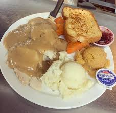

Home
Turkey Dinner

Description
A meat lovers skillet is a hearty breakfast
dish featuring a combination of various meats, potatoes, and sometimes vegetables, all cooked together in a skillet.
Ingredients
- Meats: Sausage (like Jimmy Dean's Sausage Skillets), bacon, and ham are typical inclusions.
- Potatoes: Hash browns or cubed potatoes provide a starchy base.
- Eggs: Often scrambled and incorporated into the skillet.
- Cheese: A cheese pouch or shredded cheese (like cheddar) is often included for melting.
- Optional additions: Vegetables like onions, peppers, and tomatoes may be added for extra flavor and nutrients.
- Flavor profile: The combination of savory meats, crispy potatoes, and melted cheese creates a rich and satisfying taste.
Instructions
- Preheat your oven to 375°.
- Make the shredded hash browns (2-20 oz. packages) according
to the package directions. Use butter to help flavor them and crisp them up.